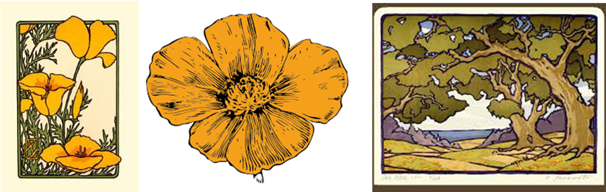
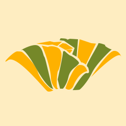

Responsivt Stilartsite var mit første projekt. Projektet blev lavet under forløbet ”Grundlæggende Webdesign”. Under dette tema fik vi stillet til opgave, at lave et responsivt webdesign, til den stilart vi fik udleveret. Her fik jeg stilarten Arts & Craft bevægelsen
Mit endelige resultat bestod af et fuldt responsivt webdesign. Websitet havde fokus på stilartens generelle historie, front-figurer, typografi, komposition/farver og filosofier indenfor bevægelsen. Herudover skulle websitets visuelle udtryk repræsentere stilarten bedst muligt.
Se det færdige resultat her
Styletyle til Websitet
Inspiration til ikon
Endelige ikon
I dette projekt arbejdede jeg selvstændig. Jeg har derfor selv skulle udarbejde alt i produktionen af det endelige produkt.
Jeg har fået mit første kendskab til følgende programmer og programmerings sprog.